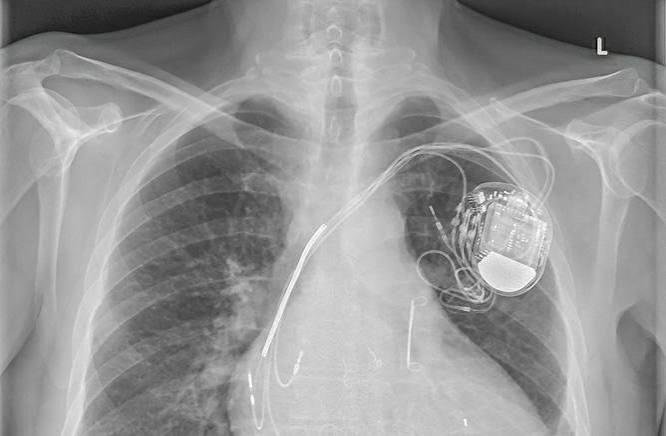

Le pacemaker et ses blocs
L'activité pratique du Pr A. Jbari demande de concevoir et de programmer un pacemaker embarqué et connecté, sous forme de maquette sur ESP32. Le sujet est un guide de 38 questions. Elles sont corrigées ici comme un cours : le sujet d'abord, puis chaque question avec ce qu'il faut savoir et une réponse. Beaucoup de questions demandent une proposition : la réponse donnée est une solution possible, justifiée, pas la seule.
Ce que raconte le sujet
Un pacemaker (stimulateur cardiaque, pile cardiaque) est un dispositif médical implanté qui délivre des impulsions électriques régulières au myocarde, pour déclencher les contractions à un rythme régulier. Il est implanté sous la clavicule ; il surveille l'activité cardiaque naturelle et traite les troubles du rythme.

Le projet a deux sous-systèmes :
- SS1, instrumentation embarquée : les circuits électroniques et la programmation des fonctions de détection et de stimulation ;
- SS2, supervision connectée : un dashboard (Node-RED, serveur web embarqué ou ThingSpeak) qui lit le mode d'activation et montre l'état du pacemaker.
| Partie du guide | Questions | Ce qu'on fait |
|---|---|---|
| Architecture du système embarqué | 1 à 8 | lire le schéma fonctionnel, le rôle de chaque bloc |
| Programmation embarquée avec ESP32 | 9 à 16 | broches, impulsion par timer, détection par seuil, fréquence cardiaque, watchdog |
| Algorithme de fonctionnement | 17 à 22 | la stimulation à la demande, son organigramme et son programme |
| Communication et télémétrie, énergie et sécurité | 23 à 31 | interface web, protocole, batterie, risques et robustesse |
| Programmation embarquée (réalisation) | 32 à 38 | le programme complet de la maquette |
Le code NBG : nommer un mode de stimulation
Un mode de stimulation s'écrit avec trois à cinq lettres, dans cet ordre : ce qu'on stimule, ce qu'on détecte, ce qu'on fait quand on détecte.
| Lettre | Définit | Codes |
|---|---|---|
| 1re | cavité(s) stimulée(s) | V = ventricule, A = oreillette, D = les deux (A + V), O = aucune |
| 2e | cavité(s) détectée(s) | V, A, D ; O = aucune (fonctionnement asynchrone) |
| 3e | réponse à la détection | I = inhibé, T = déclenché (triggered), D = les deux (I + T), O = aucune |
| 4e | asservissement de fréquence | R = asservissement (capteur) ; lettre omise s'il n'est pas programmé : DDD et non DDDO |
| 5e (optionnelle, peu utilisée) | stimulation multisite | O = aucune, A = oreillette, V = ventricule, D = les deux (A + V) |
Les modes les plus fréquents, d'après le tableau 20.12 du sujet :
| Mode | Fonctionnement | Indications |
|---|---|---|
| AAI | entraînement auriculaire sur demande, inhibé par la détection d'une activité auriculaire | bradycardie sinusale avec conduction AV intacte |
| VVI | entraînement ventriculaire sur demande, inhibé par la détection d'une activité ventriculaire | épisodes intermittents de bradycardie, FA chronique avec bradycardie, synchronisation AV non maintenue |
| VDD | entraînement ventriculaire, détection auriculaire et ventriculaire ; stimule le ventricule après un délai préfixé, en synchronisation avec l'activité auriculaire | bradycardie par bloc AV avec fonction sinusale conservée ; si bradycardie sinusale, correspond à VVI |
| DDI | entraînement et détection auriculaires et ventriculaires ; la seule réponse à une détection est l'inhibition ; évite un entraînement trop rapide du ventricule en cas de tachycardie auriculaire | dysrythmie auriculaire ; synchronisation AV seulement lorsque le pacemaker entraîne l'oreillette |
| DDD | entraînement et détection auriculaires et ventriculaires ; stimule le ventricule après un délai préfixé, en synchronisation avec l'activité auriculaire | tout type de bradycardie, synchronisation AV assurée |
| DVI | inhibition de la stimulation ventriculaire en cas d'activité ventriculaire, pas de détection auriculaire | interruption d'une tachycardie induite par le pacemaker (réentrée AV) |
| -R | la fréquence peut varier dans des limites préfixées en fonction des informations du capteur | non précisées |
| AOO | entraînement auriculaire asynchrone à fréquence fixe | seulement lors d'un pacing temporaire avec une conduction AV normale |
| VOO | entraînement ventriculaire asynchrone à fréquence fixe | seulement lors d'un pacing temporaire |
| DOO | entraînements auriculaire et ventriculaire asynchrones à fréquence fixe ; le délai AV est fixe ; risque de R-sur-T, comme avec tous les modes asynchrones | non précisées |
La maquette du projet stimule s'il n'y a pas d'événement détecté, et s'inhibe si elle en détecte un (partie 2.3) : avec une seule voie, placée dans le ventricule, c'est un mode VVI.
Question 1 : les blocs fonctionnels
On te demande. Identifie les blocs fonctionnels du pacemaker de la figure 2.
Réponse. Le schéma, redessiné :
| Bloc | Fonction |
|---|---|
| Électrode, Lead (sonde), Connector | relient le boîtier au cœur : la même sonde sert à écouter et à stimuler |
| Sensing Amplifier | amplifie et filtre le petit signal électrique du cœur |
| A/D Converter | convertit ce signal en nombres pour le microprocesseur |
| Microprocessor | exécute l'algorithme : détecter, décider, commander la stimulation |
| ROM, RAM | le programme (ROM) ; les variables, les paramètres et l'historique des événements (RAM) |
| Timer, Oscillator | l'horloge (oscillateur) et la base de temps (timer) de l'algorithme |
| D/A Converter | transforme la consigne numérique d'amplitude en tension |
| Impulse Generator | produit l'impulsion de stimulation envoyée par la sonde |
| Digital I/O Interface, Coil antenna | la télémétrie : échange de données avec l'extérieur à travers le thorax |
| Programmer | appareil externe du médecin : lit les données, envoie les réglages |
| Power Supply, Housing | la pile, qui alimente tout ; le boîtier étanche |
Question 2 : le rôle du microprocesseur
Réponse. C'est le cerveau du pacemaker. Il :
- exécute le programme rangé en ROM ;
- analyse les échantillons de l'A/D et décide s'il y a eu un battement (événement détecté) ;
- compte le temps écoulé depuis le dernier battement, avec le timer, et décide de stimuler ou non ;
- règle l'amplitude de l'impulsion par le D/A et déclenche le générateur d'impulsions ;
- enregistre les événements en RAM, applique les paramètres reçus par télémétrie et renvoie les données au programmateur.
Question 3 : le timer, plutôt que delay()
Ce qu'il faut savoir. Un timer est un compteur matériel qui avance au rythme d'une horloge et déclenche une interruption à l'alarme, tout seul. delay() fait attendre le processeur en tournant sur place.
Réponse. Le timer donne la base de temps : l'intervalle avant de stimuler, la période réfractaire, la largeur de l'impulsion, la cadence d'échantillonnage.
| Timer matériel | delay() |
|---|---|
| compte pendant que le programme fait autre chose | bloque le processeur : pendant l'attente, aucune détection |
| période exacte, sans dérive | la durée du reste de la boucle s'ajoute à chaque tour : le rythme dérive |
| peut être remis à zéro à chaque battement détecté | impossible d'annuler une attente en cours |
| le processeur peut dormir entre deux alarmes : économie de pile | le processeur reste actif pour rien |
Pour un pacemaker, rater un battement pendant un delay() peut faire stimuler au mauvais moment : c'est un défaut de sécurité, pas seulement de confort.
Question 4 : le canal de détection
Réponse. Le canal de détection (Sensing Channel) écoute le cœur :
- l'électrode au bout de la sonde capte l'activité électrique du cœur, de l'ordre de quelques millivolts ;
- le Sensing Amplifier l'amplifie et la filtre, pour garder l'onde de dépolarisation (onde R dans le ventricule) et rejeter le bruit et les parasites ;
- l'A/D la numérise ;
- le microprocesseur compare le signal à un seuil de sensibilité : quand il le dépasse, c'est un événement cardiaque détecté.
Question 5 : le canal de stimulation
Réponse. Le canal de stimulation (Stimulation Channel) agit sur le cœur : sur ordre du microprocesseur, le D/A fixe l'amplitude et le générateur d'impulsions envoie une impulsion brève (quelques volts, moins d'une milliseconde) par la sonde. Le myocarde se dépolarise et se contracte : c'est un battement provoqué, quand le cœur n'en a pas fait de lui-même.
Question 6 : la boucle de rétroaction
Réponse. Le cœur, le canal de détection et le microprocesseur forment une boucle fermée :
- le cœur bat, ou ne bat pas ;
- le canal de détection le mesure et prévient le microprocesseur ;
- le microprocesseur compare à ce qu'il attend : battement détecté à temps, il ne fait rien et relance son compte ; aucun battement à temps, il stimule ;
- la stimulation fait battre le cœur, ce que le canal de détection voit à son tour.
Le pacemaker ne stimule donc que quand il le faut : il n'entre pas en compétition avec le rythme propre du patient, et il économise sa pile.
Question 7 : la télémétrie
Réponse. Le pacemaker est sous la peau : on ne peut pas le brancher. Le circuit de télémétrie (Digital I/O Interface et Coil antenna) communique sans fil, à travers le thorax, avec le programmateur du médecin :
- lire (telemetry) : état de la pile, événements enregistrés, signal du cœur, nombre de stimulations ;
- programmer (programming) : changer le mode, la fréquence, l'amplitude, la sensibilité, sans réopérer.
Question 8 : signaux analogiques et numériques
| Liaison | Signal | Type |
|---|---|---|
| Électrode vers Sensing Amplifier | activité électrique du cœur, quelques mV | analogique |
| Sensing Amplifier vers A/D | le même signal, amplifié et filtré | analogique |
| A/D vers Microprocessor | échantillons codés | numérique |
| Microprocessor et ROM, RAM, Timer | adresses, données, interruptions du timer | numérique |
| Oscillator vers Timer | horloge | numérique (signal logique) |
| Microprocessor vers D/A | consigne d'amplitude codée | numérique |
| D/A vers Impulse Generator, puis Lead | tension de consigne, puis impulsion de stimulation | analogique |
| Microprocessor et Digital I/O Interface | paramètres et données | numérique |
| Coil antenna et Programmer | champ magnétique modulé qui porte les données | analogique (porteuse modulée) |
| Power Supply | tension de la pile | analogique |
Les convertisseurs A/D et D/A sont exactement les frontières entre les deux mondes.
À retenir
- Deux canaux autour du microprocesseur : détection (électrode, amplificateur, A/D) et stimulation (D/A, générateur, sonde).
- Boucle fermée : un battement détecté inhibe la stimulation ; c'est le mode VVI de la maquette.
- Timer matériel pour toute la base de temps : il ne bloque pas la détection, ne dérive pas, se remet à zéro.
- Télémétrie : lire et programmer à travers le thorax.